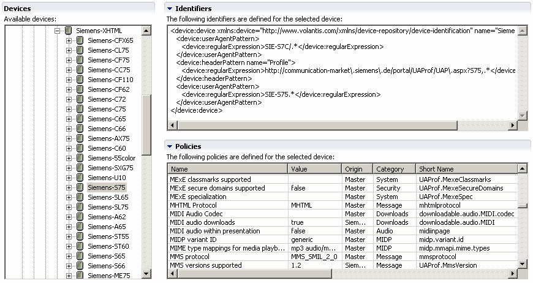

You can view the attributes of devices in the repository associated with a project, provided that at least one MCS editor is open and selected.
The view is read only. For information on how edit device policies refer to Device Repository editor.
Tip: The menu command Window | Show View | MCS Views | Device Repository will only operate successfully if a repository is already open, and you wish to view another one.

Related topics
About devices
Working with devices
Device Repository editor